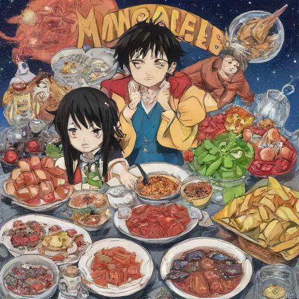
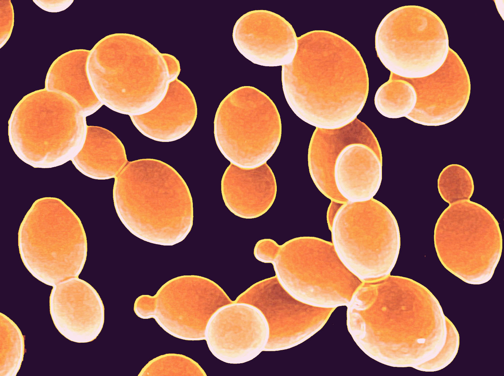
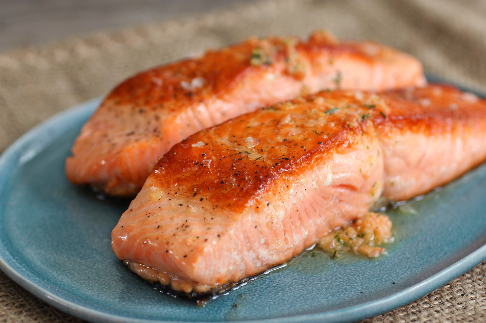

Projects

Project 1: Accountability Group Page
For this project I worked with a small group of collaborators in my cohort using GitHub to create a page showcasing our interests.
View on GitHub

Project 2: Fungal Model Systems
In this project, I created a simple website highlighting the importance of different fungal model systems for scientific research.
View on GitHub

Project 3: My Favorite Recipe
This project involved creating a multi-page website detailing how to prepare my favorite recipe.
View on GitHub